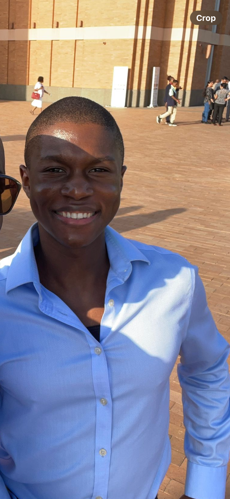
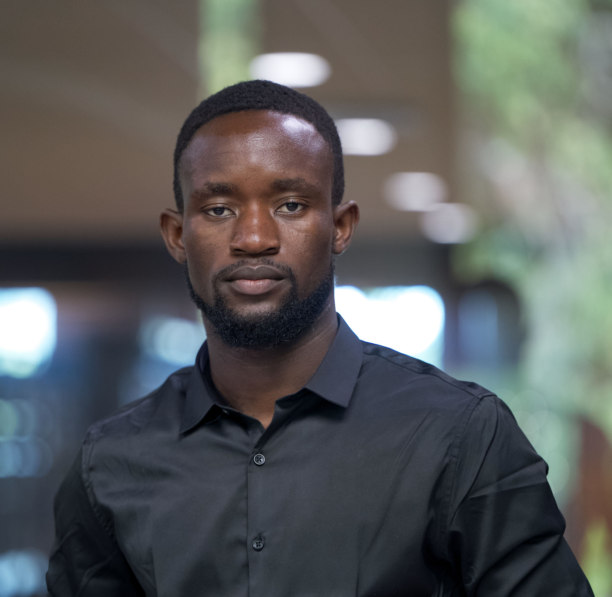
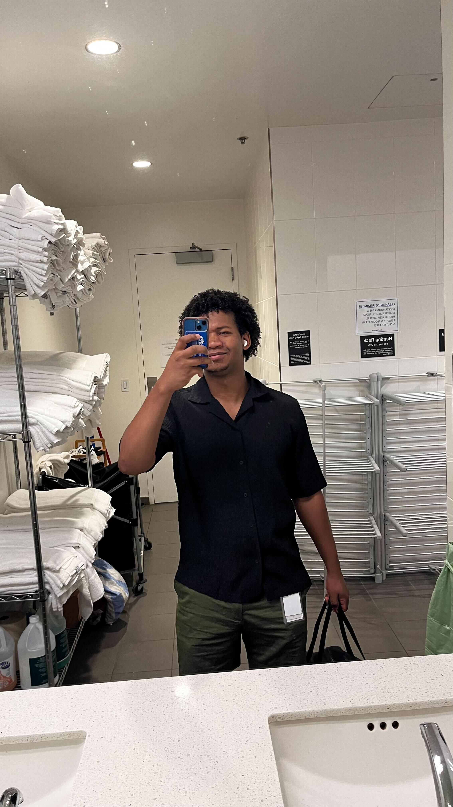

Career Development Committee
Team focused on creating resources for students
Purpose: The Tech Career Development Committee is dedicated to empowering Berea College Computer Science students with comprehensive resources and guidance for their academic and professional growth. This committee will serve as a central hub for researching, compiling, and disseminating information on various aspects of tech career development, including conferences, career paths, portfolio building, and other essential resources.
Committee Goals
- • Create a comprehensive package of resources for Computer Science students
- • Research and document various career paths in computer science
- • Compile information on conferences, internships, and other professional development opportunities
- • Develop guidelines for creating effective personal portfolios
- • Foster increased student engagement with career development resources
- • Strengthen connections between Berea CS department, alumni, and the tech industry
Meet the Committee

Bishal

Gagan

David Olorunpoju Essang

Moise

Tojo